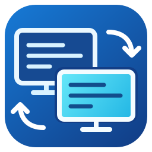
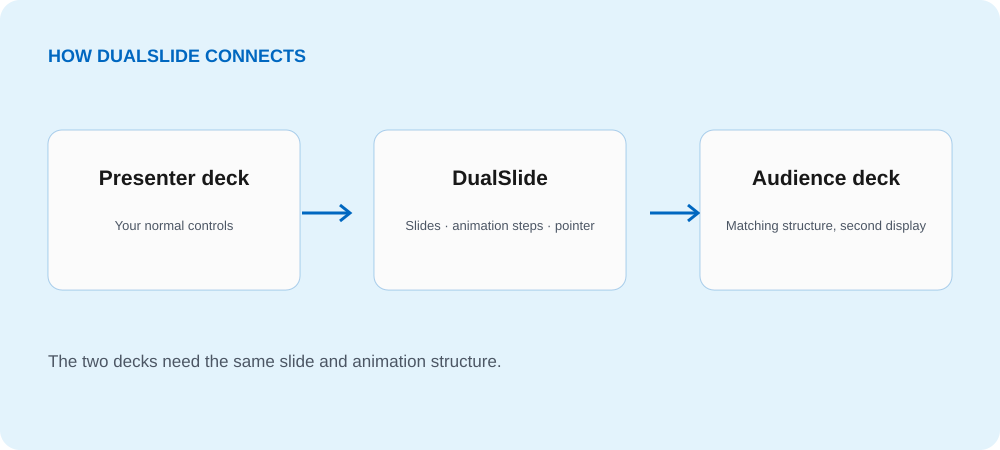

Show different slides to each screen
Use one deck for each screen—for example, two language versions of the same talk. PowerPoint runs both slideshows.

DualSlideWindows 11 · Microsoft PowerPoint
Show two PowerPoint decks on separate screens and control both from one presentation. As you move through the presenter deck, the audience deck follows the slides, animation steps, and pointer.
The two decks need the same slide and animation structure.

Use one deck for each screen—for example, two language versions of the same talk. PowerPoint runs both slideshows.
Use your usual clicks, keys, and mouse wheel. The other deck follows ordinary animation steps and your cursor or laser pointer.
Use Identify displays to find the right screens. DualSlide remembers paired decks for next time. During a talk, you can pause, reset the current slide, or press Escape to stop both shows.
Get started
Windows 11 x64, desktop Microsoft PowerPoint installed and configured, and two displays in Extend mode. The decks need matching slide counts, aspect ratios, and ordinary animation sequences. PowerPoint for the web is not supported.
DualSlide follows PowerPoint’s slide and animation state, so the two shows won’t be perfectly frame-synchronized. Shape-specific triggers, ink, and synchronized audio or video aren’t supported. Close any editable PowerPoint sessions using these files before starting.
How it works
Made by Silviu Vlasceanu
If DualSlide is useful to you, you can leave a tip on Ko-fi. Thanks for supporting my work. Bug reports and contributions help too.